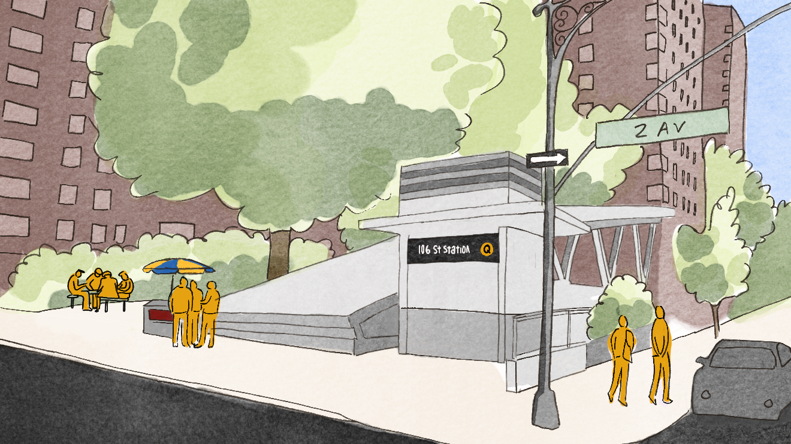
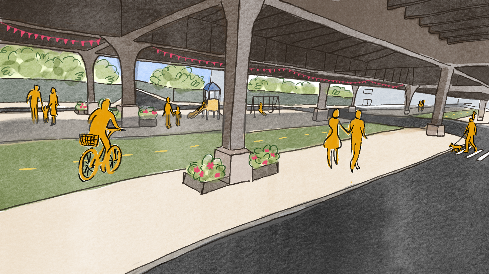
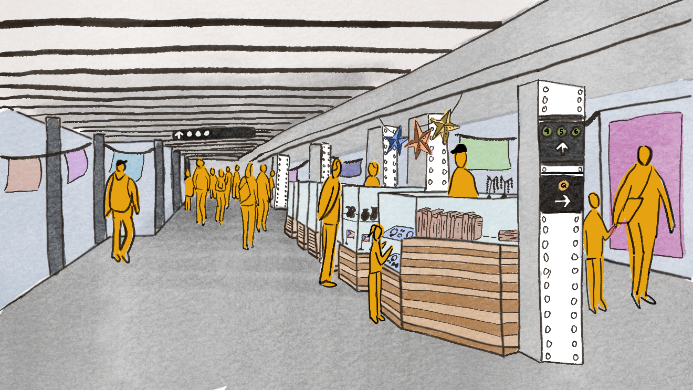
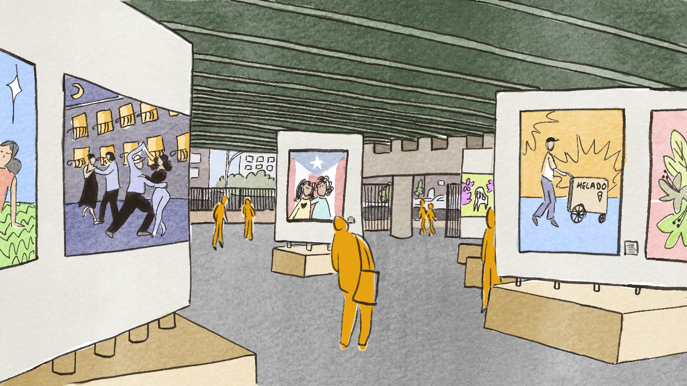
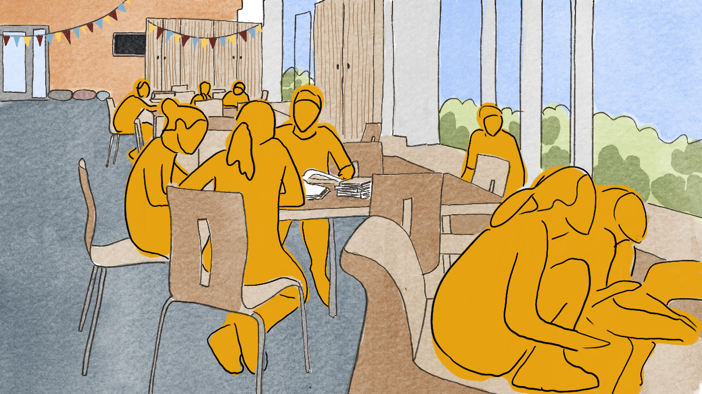

Next Stop: 125th St
Executive Summary:     
Nearly a century after it was first promised, Phase 2 of the Second Avenue Subway began construction in 2017, extending the Q line from 96th Street to 125th Street. This marked the start of a significant transit expansion through East Harlem, increasing connectivity in El Barrio, a historically Puerto Rican neighborhood. Inherent to this massive infrastructure project led by the MTA have been significant property acquisitions along Second Avenue and 125th Street for station facilities and entrances. These acquisitions, achieved through the MTA’s eminent domain power have raised significant concerns around displacement and the future use and disposition of these sites. In partnership with CIVITAS, the project explores how these publicly controlled sites can support equitable, community-driven development. Building on prior rezoning efforts by the New York City Department of City Planning, the studio evaluates zoning, development potential, and policy constraints to identify opportunities for affordable housing, community facilities, and local retail. Through engagement with residents, community boards, and neighborhood organizations, the work emphasizes community-based planning strategies that address displacement concerns while aligning transit investment with local needs and long-term neighborhood stability.

Read the full report here.